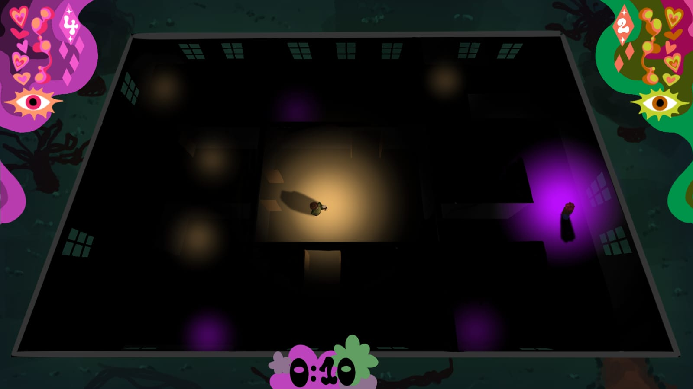

"Ilumina más cristales que tu contrincante.
Encuéntrate en esta mansión encantada."

KEY ART — placeholder— Descubre el juego
Brawlight Manor es un juego competitivo 1v1 donde dos jugadores exploran una mansión oscura armados únicamente con una linterna.
Para ganar deberán reclamar cristales repartidos por el mapa mientras gestionan su cordura, que disminuye al permanecer lejos del otro jugador. La luz no solo revela el entorno: también es el centro del combate, la supervivencia y el control del espacio.
Con partidas rápidas, combate melee con parry, habilidades especiales únicas y mapas laberínticos, cada enfrentamiento se convierte en un duelo estratégico de riesgo y proximidad donde acercarse al rival es tan peligroso como necesario.
De un vistazo
— Lo que Aguarda
Sistema de Cristales
Cada sala esconde cristales que debes iluminar con tu linterna. Cuantos más ilumines, más puntos acumulas, pero un rival puede quitártelos en cualquier momento.
Sabotaje y Combate
El sistema de light melee, heavy melee y parry genera un triángulo de decisiones basado en timing, riesgo y recompensa, más cercano a un juego de lucha simplificado que a un brawler caótico.
Encuéntrate en la oscuridad
Pasillos oscuros y laberínticos que tendrás que atravesar con la ayuda de tu linterna. Los cristales se encienden cuando los iluminas, pero rápidamente la oscuridad prevalece de nuevo.
La Mansión está encantada
Eventos encantados saltarán durante la partida. Puertas abiertas que se cierran, caminos nuevos que cruzar.